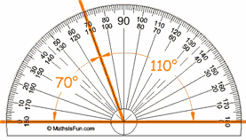

Using a Protractor
This is a protractor, it helps us measure angles (in degrees):

Protractors are fun and easy to use
Have a look at this animation (press the play button) to see how to make a neat angle using a protractor and ruler:
images/construct.js?mode=pro50
Measuring

Protractors usually have two sets of numbers going in opposite directions.
The outer set usually measures angles opening left, and the inner set measures angles opening right.
Be careful which one you use!
When in doubt think "should this angle be bigger or smaller than 90° ?"
images/construct.js?mode=pro110
Have a Go Yourself!
Let's measure the angles A, B and C inside the triangle. Drag the protractor and rotate it using arrow keys.
images/protractor-angle.js
Be careful which angle you read from the protractor. Hint: if you get them all correct, they will add up to 180°.
1812, 1813, 1814, 1815, 3320, 3321, 3322, 3323, 3324, 3325